Live · since 2026
$782MRR
MCP Emails
Email for AI agents.
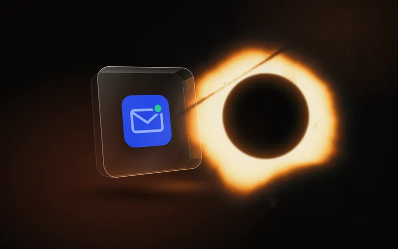
Night-science photographs from the 1850s to 1880s, all made on glass, regraded into near-black and one electric amber. The site is a stack of glass plates: each pane holds a photograph or a product, and every pane bends the light a little, the way the Albretsen mark bends its ray. Quiet, exact, slightly nocturnal. The work of someone who builds after hours and ships.


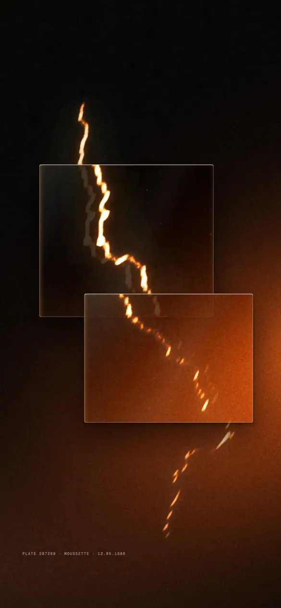
Each pane holds a live copy of the world behind it, displaced and magnified a few percent, so dragging a pane drags its refraction with it. Sparks are drawn once on a canvas and mirrored into every pane with the same displacement. 2D only: DOM and one canvas, no WebGL. Sound (Web Audio, synthesised, off by default): a glass tink on pick-up, a slide when a pane travels, a crackle with each spark, and a low nocturne hum while sound is on.
The mark is an A made of two glass plates seen edge-on, leaning together. One amber ray crosses them and is displaced inside each plate: textbook refraction through a slab. It reads as a letter, as optics and as a quiet signature of the hero.

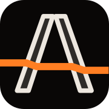
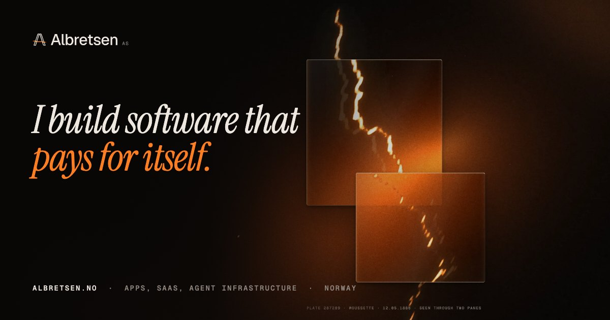
All neutrals sit on hue 48° with almost no chroma, so blacks feel like an unlit darkroom rather than a screen. Amber is the only colour, and it is rationed: one word, one ray, one figure per view.
Open-access photographs from The Metropolitan Museum of Art (CC0), every one made from a glass negative. Regraded with one gradient map (black → ember → amber → cream) and fresh film grain. plate-* files are opaque; emulsion-* files carry the image as alpha, so it floats on clear glass over any background.


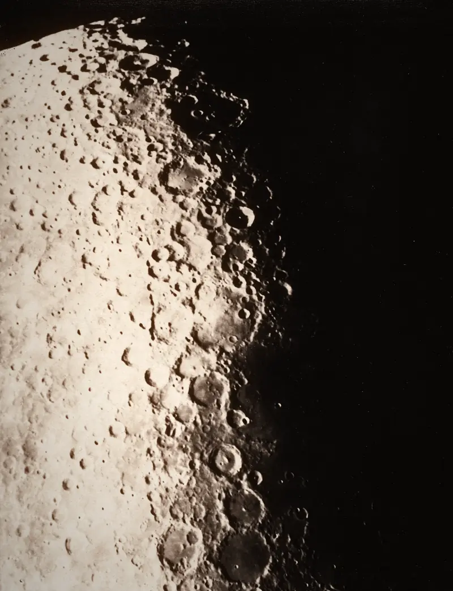
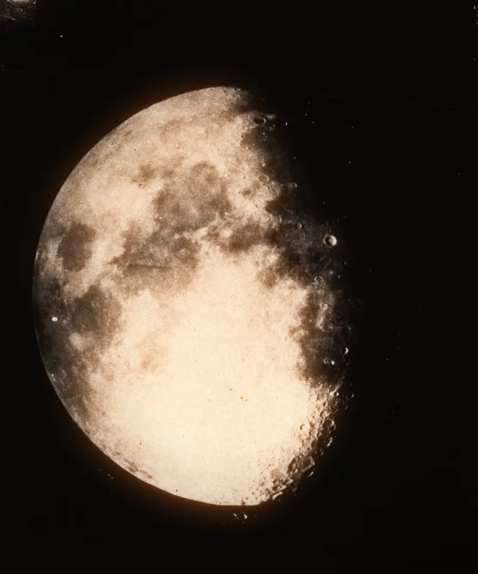
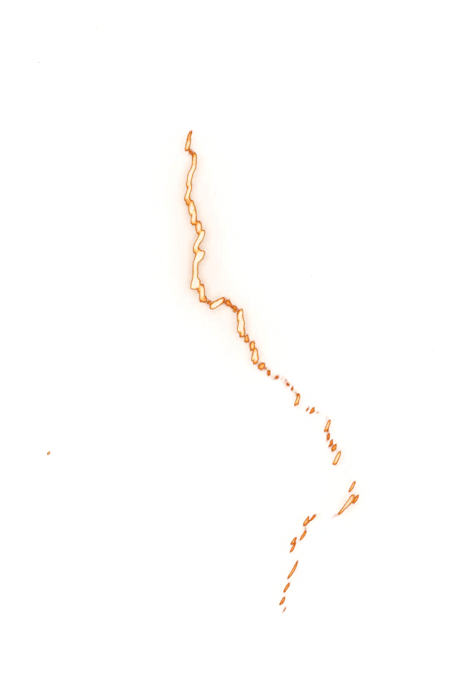
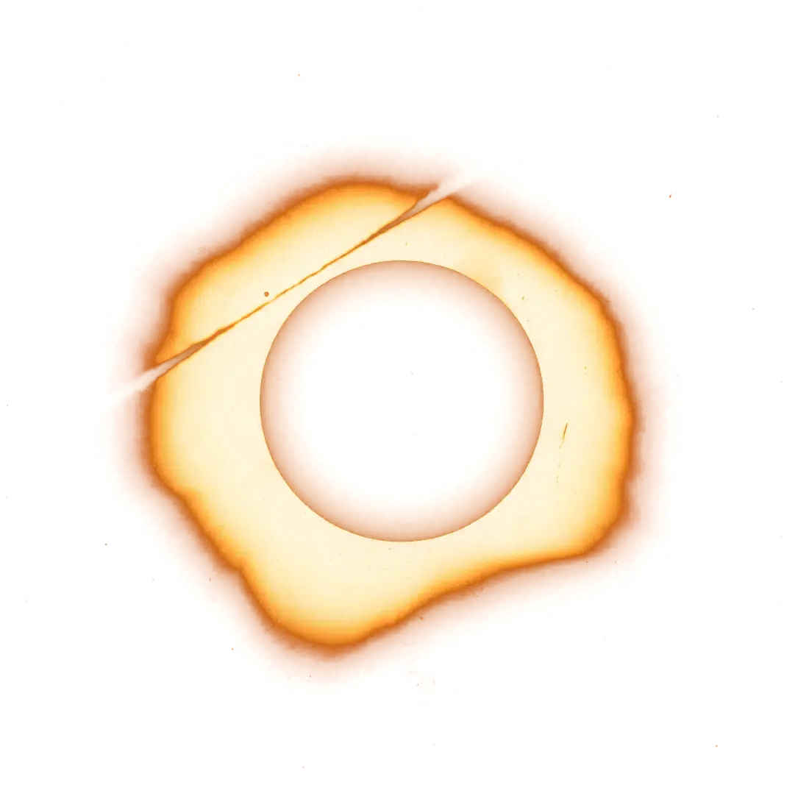
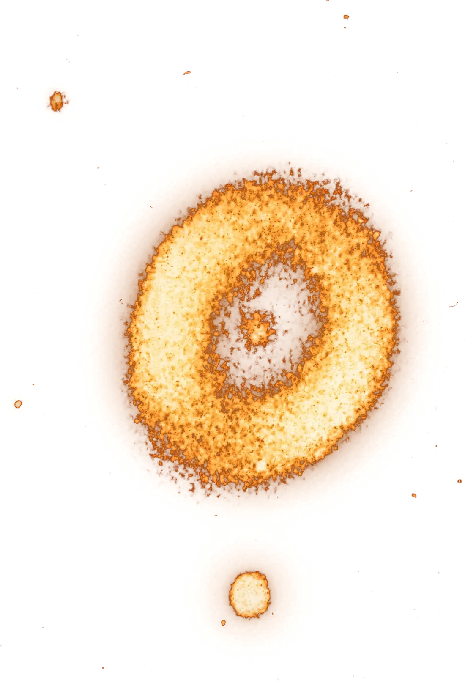
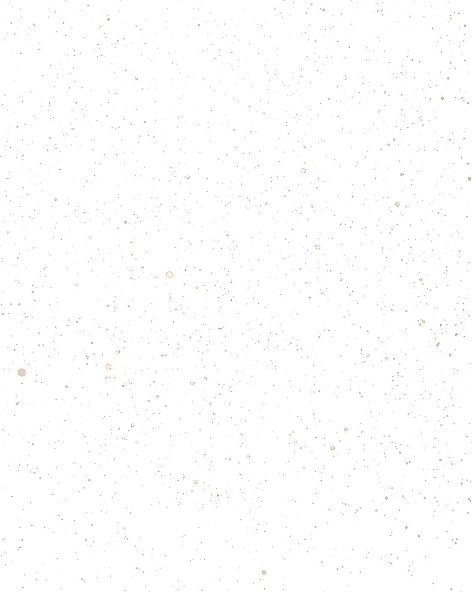

Each real product logo, unaltered, sits inside a thick block of glass in front of its own plate. The figure on each card is the canonical one from content.js.
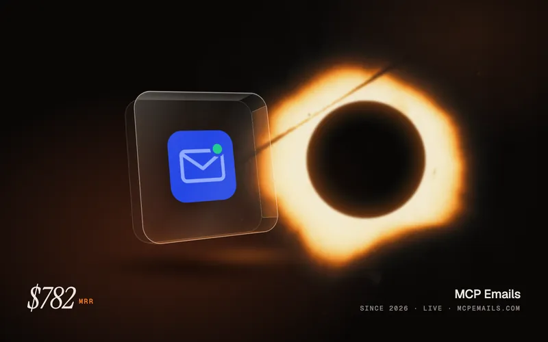
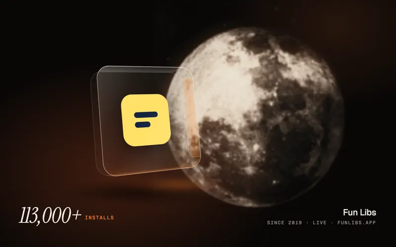
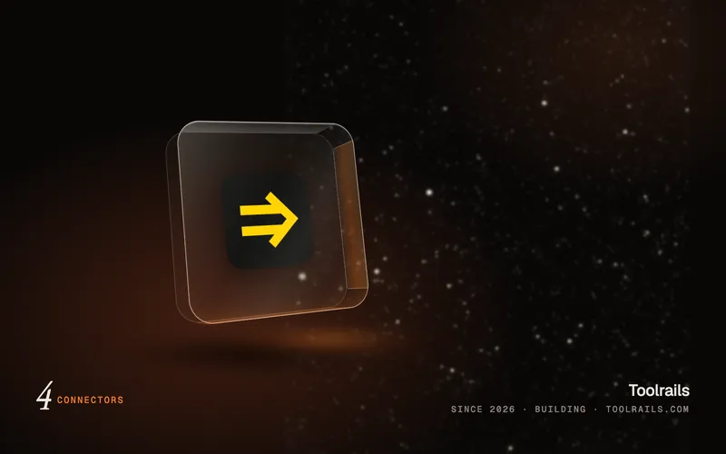
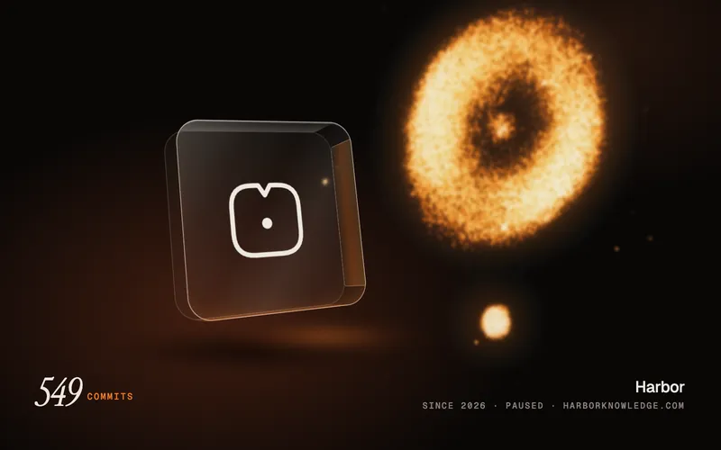

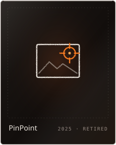


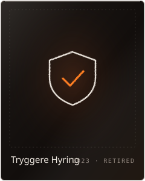
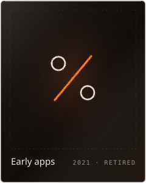
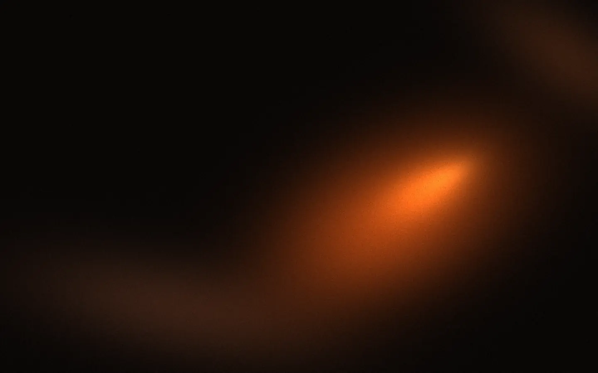


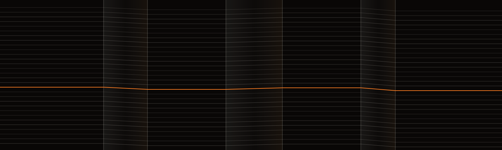


Entrance. Photographs develop like a plate in the tray: over-exposed amber haze resolving to sharp, tied to scroll with animation-timeline: view(). Every plate above uses it.
Transition. Sections are sticky panes; the one underneath sinks, dims and softens as the next slides over. Demo below.
Hover. A specular highlight travels across the glass and the image inside shifts a few pixels, as if seen through a slab. Hover the product cards.
Page transition. View Transitions API: a hairline of amber light opens horizontally into the next view. Try the button below.
Logo. The two plates settle, then the ray draws through them, kinking in each. Click the mark in the masthead.
Lenis 1.3.23 smooths the wheel; scroll timelines read the native position it writes. Skipped for reduced-motion visitors.
Email for AI agents.

A fill-in-the-blanks word game for Android and iOS.
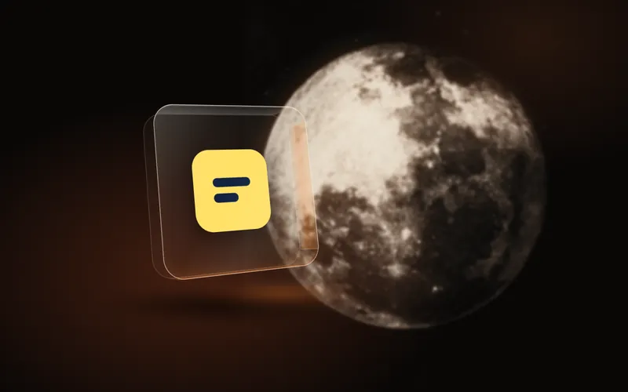
One MCP URL that gives an agent every tool.
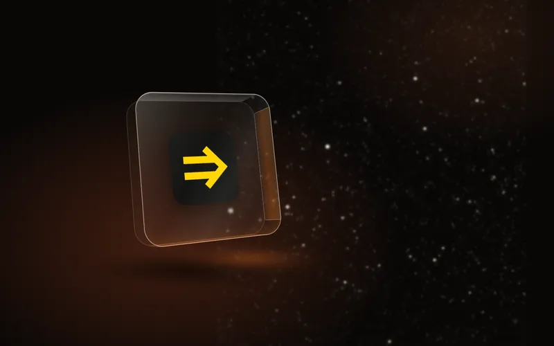
A private knowledge base shared by people and AI.
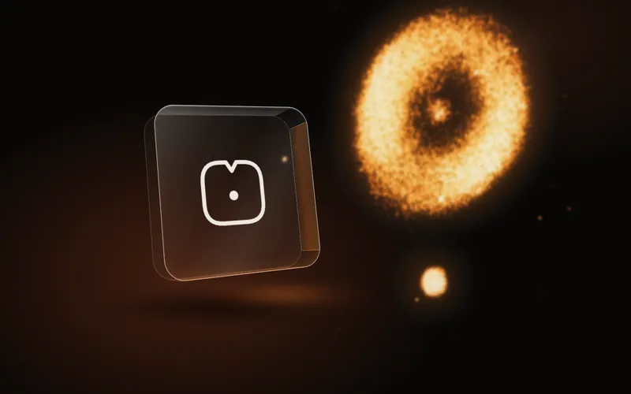